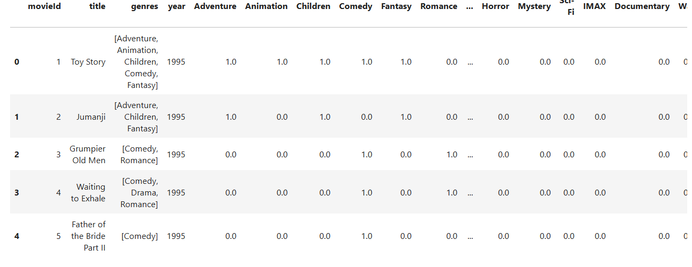
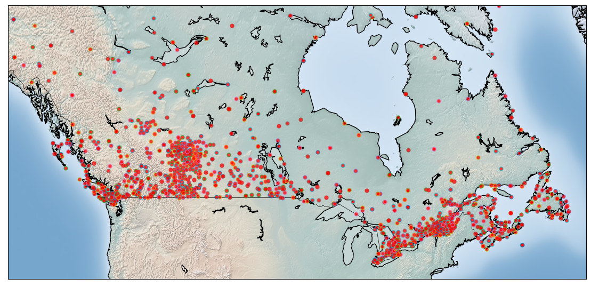
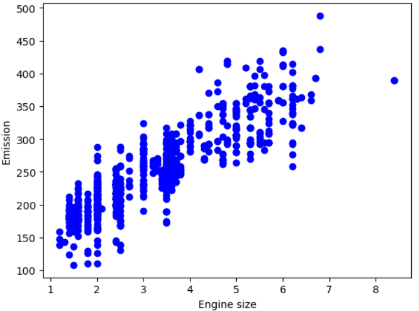
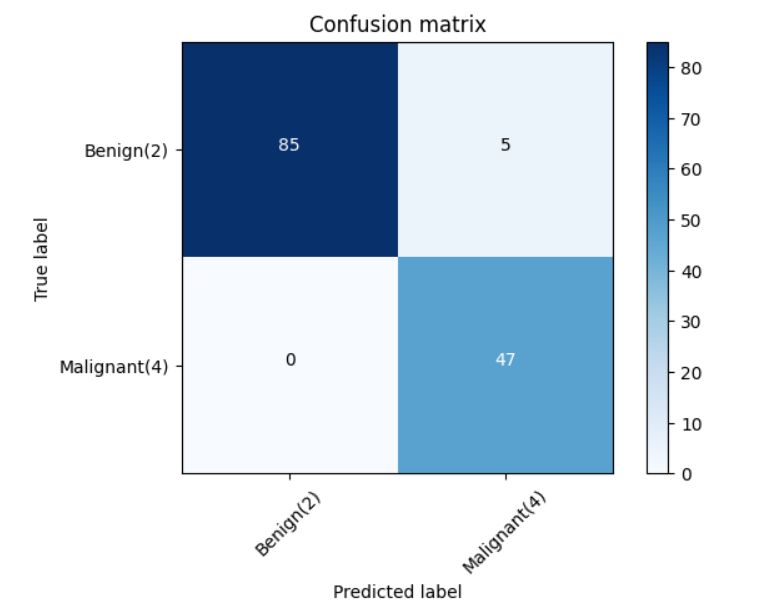
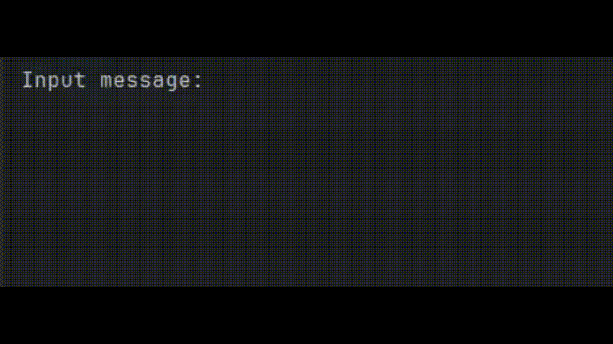
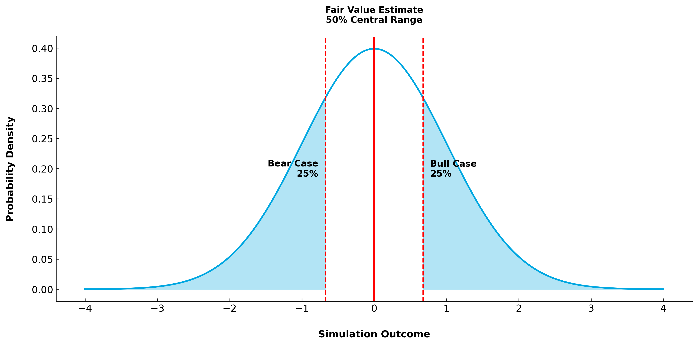

Hello world, I'm
Baybars
Computer Science student at York University. Aspiring AI engineer with a passion for developing intelligent systems and data-driven innovations. Experienced in machine learning frameworks like scikit-learn and pandas, with certifications in ML and Generative AI, eager to contribute to cutting-edge AI projects.
Selected Works

Collaborative Filtering Recommendation System
Implemented a collaborative filtering-based movie recommendation system using Python and Pandas, processing a dataset of 1 million+ ratings. Calculated Pearson correlation to identify top 50 similar users and recommend movies. Generated personalized recommendations with an average accuracy of 85%, prioritizing highly-rated films.

DBSCAN Clustering
I used DBSCAN clustering to analyze 1,114 Canadian weather stations, grouping them by location (2D) and then by 5 dimensions (location plus mean, max, and min temperature). This identified clusters with similar geographical and climatic features.

Multiple Linear Regression
Implemented a Multiple Linear Regression model using scikit-learn to predict CO2 emissions from car features like engine size, cylinders, and fuel consumption. Achieved a variance score of 0.86 and a Mean Squared Error (MSE) of 491.58 on the test set. The model uses Ordinary Least Squares (OLS) to estimate coefficients and intercept, providing accurate predictions for emission values.

Support Vector Machines
Implemented a Support Vector Machine (SVM) model using scikit-learn to classify cancerous tumor data. Achieved a classification accuracy of 94.6%, with a confusion matrix showing 85 true positives (Benign), 5 false positives, and 47 true positives (Malignant). The model demonstrates high precision in distinguishing between benign and malignant tumors.

Encoder and Decoder
Developed a Java program to encode and decode messages using a custom substitution cipher. The program takes user input and applies a predefined encoder or decoder dictionary to transform the message. It supports both encoding and decoding operations, with an option to repeat the process.

Probability Calculator
Implemented a Monte Carlo simulation in Python for estimating probabilities in ball-drawing scenarios from a hat with colored balls, using random sampling without replacement. yielding probabilities like 0.6078 (true: 0.6, 1.3% error). Provides accurate approximations for combinatorial events where exact computation is complex, with error reducing below 1% at higher trial counts.
Experience
Front-End Developer Intern
Jan 2026 - PresentTreepz • Toronto, ON
- Build responsive web applications using Next.js, React, and TypeScript
- Implement UI designs with Tailwind CSS and develop reusable component libraries
- Integrate RESTful APIs and optimize application performance
- Collaborate with cross-functional teams and participate in code reviews
About
Computer Science student at York University. Aspiring software developer with a passion for creating efficient and innovative solutions. Experienced in various programming languages and eager to contribute to impactful projects.
Certifications
Machine Learning with Python
IBM
IBM Z Xplore
IBM
Fundamentals of Encryption & Quantum-Safe Techniques
IBM
Generative AI Fundamentals
Databricks
Scientific Computing with Python
FreeCodeCamp
Databricks Fundamentals
Databricks
Foundational C# with Microsoft
Microsoft